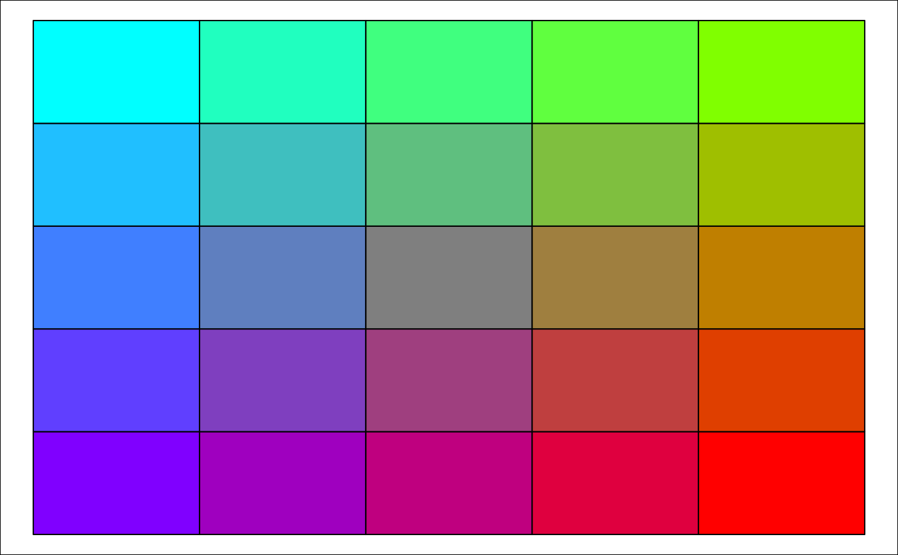
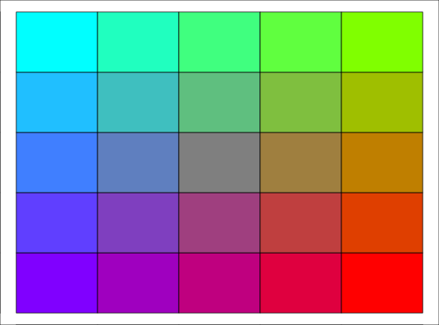

Generates a 2D matrix of graduated colours by interpolating between the given colours specifying the four corners.
colour_mat(cols, n = c(10, 10), rotate, plot = FALSE)
| cols | vector of length >= 4 of colors (example, default = |
|---|---|
| n | number of rows and columns of colour matrix (default = 10; if length 2, then dimensions of rectangle). |
| rotate | rotates the entire colour matrix by the specified angle (in degrees). |
| plot | plots the colour matrix. |
Matrix of colours.
cm <- colour_mat (n = 5, cols = rainbow(4), rotate = 90, plot = TRUE)# 'colour_mat' is intended primarily for use in colouring groups added with # 'add_osm_groups' using the 'colmat = TRUE' option: bbox <- get_bbox (c (-0.13, 51.5, -0.11, 51.52)) # Generate random points to serve as group centres set.seed (2) ngroups <- 6 x <- bbox [1,1] + runif (ngroups) * diff (bbox [1,]) y <- bbox [2,1] + runif (ngroups) * diff (bbox [2,]) groups <- cbind (x, y) groups <- apply (groups, 1, function (i) sp::SpatialPoints (matrix (i, nrow = 1, ncol = 2))) # plot a basemap and add groups map <- osm_basemap (bbox = bbox, bg = "gray20") map <- add_osm_groups (map, obj = london$dat_BNR, group = groups, cols = rainbow (4), colmat = TRUE, rotate = 90) print_osm_map (map)